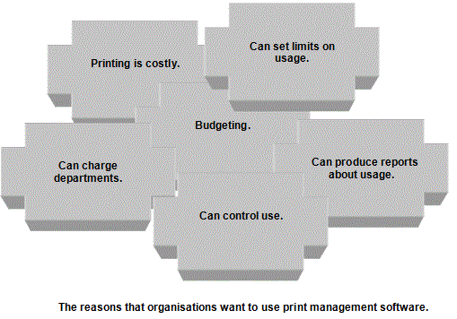

<div id="jsn-maincontent" class="span9 order1 row-fluid">
  <div id="jsn-maincontent_inner">
    <div id="jsn-centercol">
      <div id="jsn-centercol_inner">
        <div id="jsn-mainbody-content" class="jsn-hasmainbody">
          <div id="jsn-mainbody-content-inner1">
            <div id="jsn-mainbody-content-inner2">
              <div id="jsn-mainbody-content-inner3">
                <div id="jsn-mainbody-content-inner4" class="row-fluid">
                  <div id="jsn-mainbody-content-inner" class="span12 order1">
                    <div id="jsn-mainbody">
                      <div id="system-message-container"></div>

                      <div
                        class="item-page"
                        itemscope
                        itemtype="https://schema.org/Article"
                      >
                        <meta itemprop="inLanguage" content="en-GB" />

                        <div itemprop="articleBody">
                          <p></p>
                          <h1 style="text-align: center">Spooling</h1>
                          <p>
                            <strong class="NormalContentHeading"
                              >Spooling<br /></strong
                            >A ‘print spooler’ is a piece of software that
                            intercepts and stores on a storage device files that
                            have been sent to a printer. It then takes over the
                            management of the transfer of the files from the
                            computer to the printer. The computer (a very fast
                            device) is therefore freed up from the task of
                            printing (a very slow operation) so you don’t suffer
                            from the problem of ‘speed mismatch’, where you have
                            to work at the speed of the slowest device. The
                            print spooler can receive lots of jobs at the same
                            time from lots of different applications.
                          </p>

                          <p>
                            On a network, you might be waiting a long time while
                            other print jobs are being serviced and the printer
                            becomes free. The print spooler collects and stores
                            on a storage device all the jobs sent to the
                            printer, queues them all up by creating a queue of
                            references to each file that needs to be printed
                            (and prioritises them if necessary) and then sends
                            them to the printer as and when the printer is free.
                            This is known as ‘de-spooling’. Everyone can send
                            their printing jobs at any time from any application
                            and their application will be immediately freed up.
                          </p>
                          <p>
                            <strong
                              class="NormalContentHeading"
                              style="line-height: 1.5"
                              >Print management software<br /></strong
                            >The network manager can configure the print spooler
                            software on a network. That means, for example, that
                            she could set up the spooler software to make some
                            people's print jobs more important than others. When
                            they send a print job, their work jumps straight to
                            the front of the print queue! Sometimes,
                            organisations buy a further piece of software, known
                            as 'print management software' to provide the
                            network manager with even more print management
                            features.
                          </p>
                          <p align="center">
                            
                          </p>
                          <ul>
                            <li style="list-style-type: none">
                              <ul style="list-style-type: disc">
                                <li>
                                  Printing is costly. It costs a lot of money to
                                  buy paper and ink cartridges.
                                </li>
                                <li>
                                  If one person is printing a huge amount of
                                  work that is unfair to people who are waiting,
                                  perhaps to print small jobs. If this keeps
                                  happening people will get annoyed! Print
                                  management software can allow organisations to
                                  identify people who are printing huge amounts
                                  and to take appropriate action if necessary.
                                </li>
                                <li>
                                  Organisations need to budget for resources.
                                  Print management software helps them to do
                                  this by providing information about how much
                                  is being printed and by whom and then
                                  controlling it.
                                </li>
                                <li>
                                  Costs can be allocated to printouts so that
                                  printing costs can be charged to projects.
                                </li>
                              </ul>
                            </li>
                          </ul>
                          <p>
                            With this type of software, you could, for example,
                          </p>
                          <ul>
                            <li style="list-style-type: none">
                              <ul style="list-style-type: disc">
                                <li>
                                  Produce reports showing how many copies were
                                  printed by each user on the network.
                                </li>
                                <li>
                                  Automatically generate charges for individuals
                                  who over-print.
                                </li>
                                <li>
                                  Set limits on how much a person can print in
                                  any particular time period.
                                </li>
                                <li>
                                  Prevent certain people accessing certain
                                  (expensive) resources, for example, colour
                                  printers.
                                </li>
                                <li>
                                  Prevent people from printing at all, or
                                  allowing them to print only at certain times.
                                </li>
                              </ul>
                            </li>
                          </ul>
                          <p></p>
                        </div>
                      </div>
                    </div>
                  </div>
                </div>
              </div>
            </div>
          </div>
        </div>
      </div>
    </div>
  </div>
</div>
